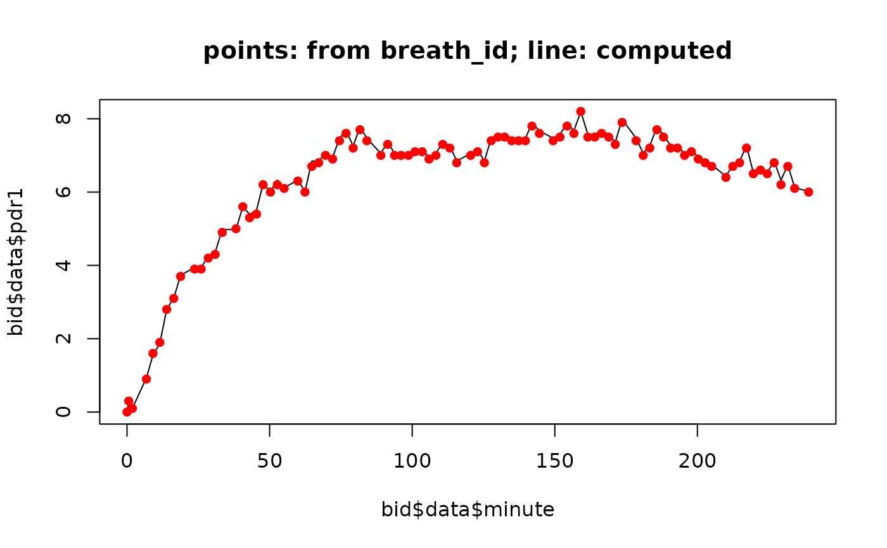

Convert DOB (delta-over-baseline) to PDR for 13C breath test. This is equation (4) in Sanaka, Yamamoto, Tsutsumi, Abe, Kuyama (2005) Wagner-Nelson method for analysing the atypical double-peaked excretion curve in the [13c]-octanoate gastric emptying breath test in humans. Clinical and experimental pharmacology and physiology 32, 590-594.
Usage
dob_to_pdr(
dob,
weight = 75,
height = 180,
mw = 167,
purity_percent = 99.1,
mg_substrate = 100
)Arguments
- dob
Delta-over-baseline vector in 0/00
- weight
Body weight in kg; assumed 75 kg if missing
- height
Body height in cm; assume 180 cm if missing
- mw
Molecular weight, 83.023388 g/mol for acetate, 167 g/mol for octanoate. Can also be given as string "acetate" or "octanoate".
- purity_percent
Purity in percent
- mg_substrate
Substrate in mg
Note
I have no idea where the factor 10 in equation (4) comes from, possibly from percent(PDR)/and DOB(0/00). In Kim and Camillieri, Stable isotope breath test and gastric emptying, page 207, a factor of 0.1123 instead of 0.01123 is used, without the factor 10. Which one is correct?
Examples
filename = btcore_file("350_20049_0_GERWithWeight.txt")
bid = read_breathid(filename)
bid$data$pdr1 = dob_to_pdr(bid$data$dob, weight=bid$weight, height=bid$height)
plot(bid$data$minute, bid$data$pdr1, main="points: from breath_id; line: computed",
type="l")
points(bid$data$minute, bid$data$pdr,col="red",type="p",pch=16)

#
# Check how far our computed pdr is from the stored pdr
var(bid$data$pdr1-bid$data$pdr)
#> [1] 0.000952